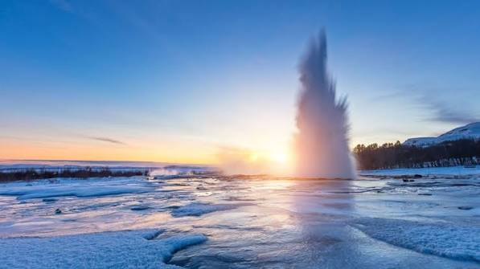
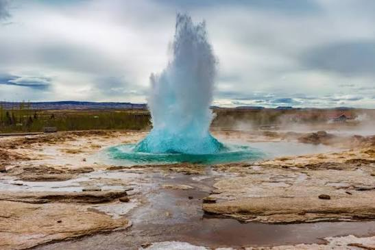
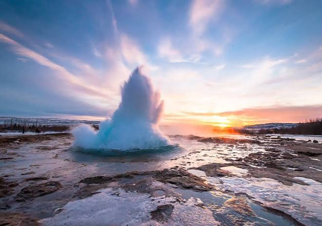
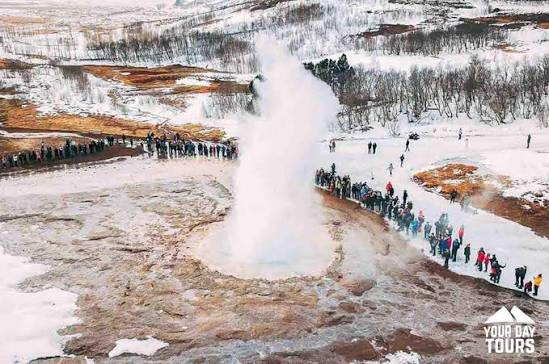

Geysir - Náttúra og sögulegt
Geysir í Haukadal er goshver sem nú til dags lætur lítið á sér kræla. Geysir er einn frægasti goshver í heimi. Margir fleiri hverir eru á Geysissvæðinu, til dæmis Strokkur, Smiður og Litli-Strokkur. Geysir er fyrst getið með nafni árið 1647 og er þá mikill og ákafur goshver, en á þeim tímum gat hann gosið nokkuð reglulega. Þá þeyttu hann vatni 60 til 80 metra upp í loftið. Fyrir árið 1845 varð hann allt að 170 metrar. Eftir árið 1900 dró mikið úr gosvirkni hans og var kólnunarflötur vatnsins (yfirborðið) orðið of stórt. Þá var brugðið á það ráð að gera skurð úr hvernum til að leiða á brott umfram-magn af vatni til að létta undir með hvernum. Einnig var losað út í hann 100 kg af handsápu til að vatnið myndi snöggsjóða. Eftir Suðurlandsskjálftana sumarið 2000 tók Geysir aftur að gjósa en hefur nú dregið sig í hlé. Hverasvæðið var friðlýst 17. júní 2020.



